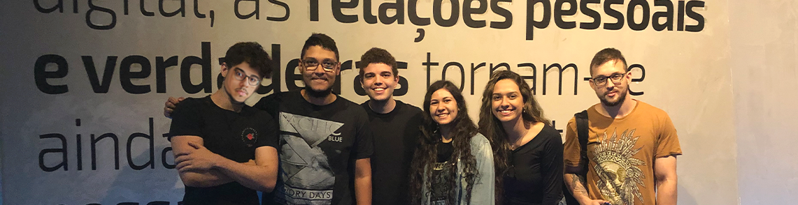

Criada em 2020 e visando a sustentabilidade a 5G Soluções Tecnológicas traz como maior proposta para o mercado, uma solução inovadora e única para a redução de desperdício de alimentos.
A nossa inovadora Bancada Refrigerada, é um dos maiores investimento para o varejo que hoje em dia perde produtos rapidamente com as condições de armazenamento em bancadas tradicionais, que consequentemente acaba resultando na perda do capital daquele que investe.
Atendendo a demanda do mercado, trazemos como diferencial o controle da temperatura que é responsável por aproximadamente 70% de uma boa conservação, resultando assim no aumento da durabilidade de hortaliças e/ou frutas.
Nosso objetivo, é trazer uma facilidade para aquele que gerencia as bancadas, isso através de um software desenvolvido por nós, visando uma interface mais intuitiva para os usuários com maior controle e com atualização em tempo real.
